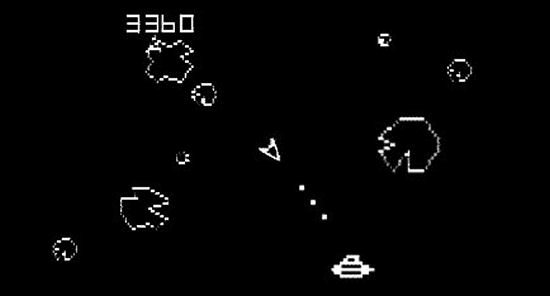
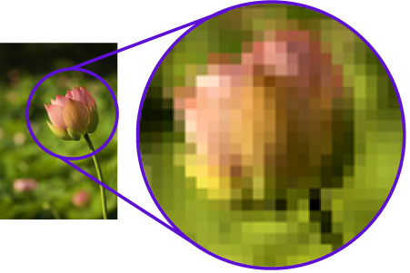

Vector Images

Vector graphics are created from
mathematical formulas. Those mathematical formulas can create lines, curves, shapes,
and text. This differs a bitmap image, which contains each and every pixel's
color.
The mathematical
formulas are instructions that control where and how those lines, curves, and text
are placed which are combined all together to create the desired image.
A few examples of vector graphic formats include The PostScript font, PICT, and EPS.
Bitmaps Images
.png)
A bitmap is a graphic
which forms an
image created out of rows which make up a grid of different colored pixels. The more
complex a bitmap image is, the more pixels and colors it takes to make it. Here is a
list of some common bitmap graphic formats: Fonts, BMP, PNG, JPEG, and
GIF.
Bitmap images are the
most common images on the web. Bitmap graphics can be created in many different ways
such as cameras and many computer softwares like photoshop and other graphic design
softwares. Bitmap graphics are also sometimes called “raster” graphics.
History of Vector Images
.svg)
After the first computer was created In the mid-1940 early computer programmers began theorizing out different ways to create high quality crisp digital images. Computers of that time period could not display bitmap images because of their extremely limited memory which was the leading cause for vector graphics to be developed.
The inventor of vector graphics is a
man named Ivan Edward Sutherland who is known as
one of the pioneers of computer-aided graphics. He is most well known for creating
the graphics software called Sketchpad.
At the start, vector graphics mainly
consisted of straight lines until a French
engineer
named Pierre Bezier figured out a way to mathematically define curves. He then
figured
out a way to scale those curved lines using control points. Those points are
attached to
a mathematical equation which keeps the points in place as the size changes to
perfectly
maintain a vector line's proportion.
At the start, vector graphics mainly consisted of straight lines until a French engineer named Pierre Bezier figured out a way to mathematically define curves. He then figured out a way to scale those curved lines using control points. Those points are attached to a mathematical equation which keeps the points in place as the size changes to perfectly maintain a vector line's proportion.
One of the earliest users of Vector images was the US Department of Defense which used vector graphics to create high-quality maps and also model interactively.
As Vector graphics became more advanced and became easier to use, early game developers saw its potential because of the extremely small file size, greater detail, and smoother lines that vector graphics could provide.

Atari Asteroids Game (source)Sometime in the 1970's Atari released the game Asteroids,”image above” which was created using vector art. A Lot of other game creation companies jumped on the vector art bandwagon and thousands of games were created. Some of the most popular and well known vector art games are Star Wars Atari-1983, Tail Gunner Vectorbeam-1979, Star Trek: Strategic Operations Simulator Sega-1983, and Space Duel ”original Asteroids direct descendant” Atari-1982.
Differences Between Bitmap and Vector Images
Bitmap images are far better at replicating the real world than vector images
Vector graphics contain instructions which tell where to place all of the components of the vector graphic, while bitmap images store the data about each and every pixel and its color which when put together make up an image.
Vector graphics are not affected by a computer changing resolution. A vector graphic will look just as clear and crisp at 800 x 600 as it will look at 3240 x 2160. The reason vector graphics are not affected by resolution changes is that the vector graphic components are automatically redrawn to look the same on any different resolution. Bitmap graphics are affected by a computer changing resolution.
If you look at a bitmap graphic at a
smaller resolution then the graphic was created for,
it will look sharper and higher quality but small, and if you look at that same
bitmap graphic at a higher
resolution then it was created for, it will look blocky, jagged and large.
Bitmaps are easy to display and
modify because they can be opened and understood by most
paint programs. Vector graphics are easy to modify because they are made out of
shapes
and lines which can be easily altered, but finding a program that supports vector
graphics can be challenging, in comparison to the many programs that support bitmap
graphics, there are hardly any programs that support vector graphics.
A vector graphic can easily be converted into a bitmap graphic while a bitmap
graphic is
very difficult to turn into a vector graphic.

Bitmap High to Low Quality (Source).jpg)

.jpg)